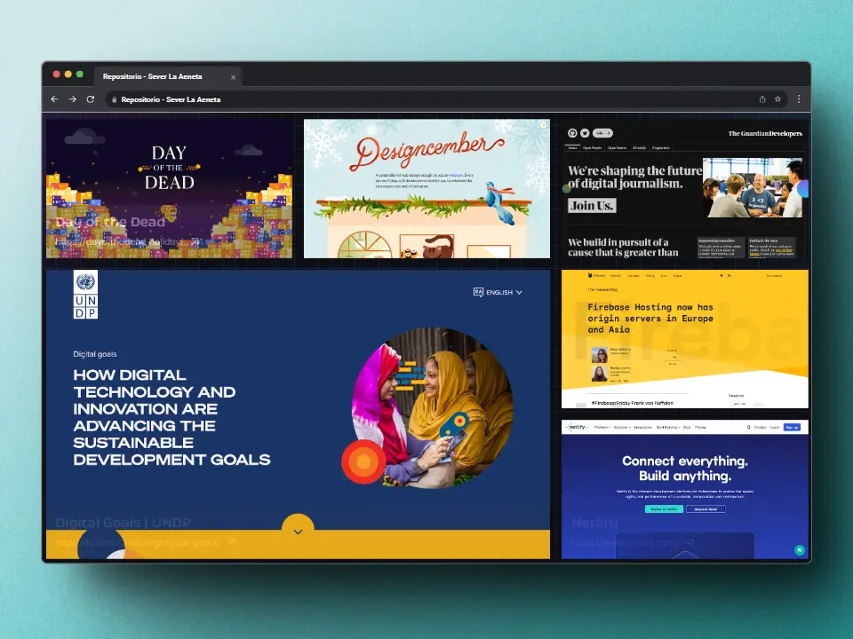

Busca un trabajo terminal
El proyecto de este repositorio es muy importante para toda la comunidad, ya que indagar el estado del arte por medio de la institución es algo complicado para todo mundo.
Nuestro objetivo es ayudar la comunidad estudiantil para encontrar rapidamente los trabajos terminales realizados en la institución en generaciones anteriores.
Realizar una consulta¿Quiénes somos?
Somos el equipo Xtreme Programmers, estamos conformados por 5 integrantes los cuáles nos hacemos cargo de desarrollar esta plataforma para la ESCOM en la materia de Ingeniería de Software.
Nombre de cada uno de nosotros, Nombre de cada uno de nosotros, Nombre de cada uno de nosotros, Nombre de cada uno de nosotros, Nombre de cada uno de nosotros